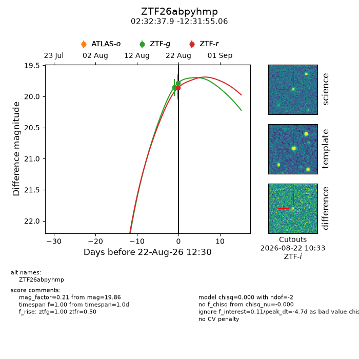
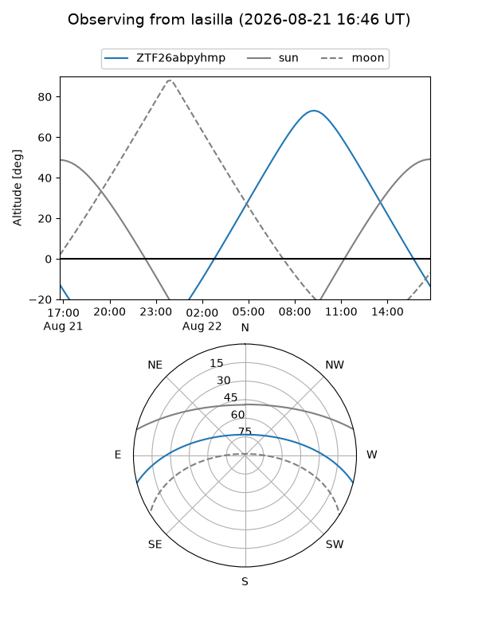
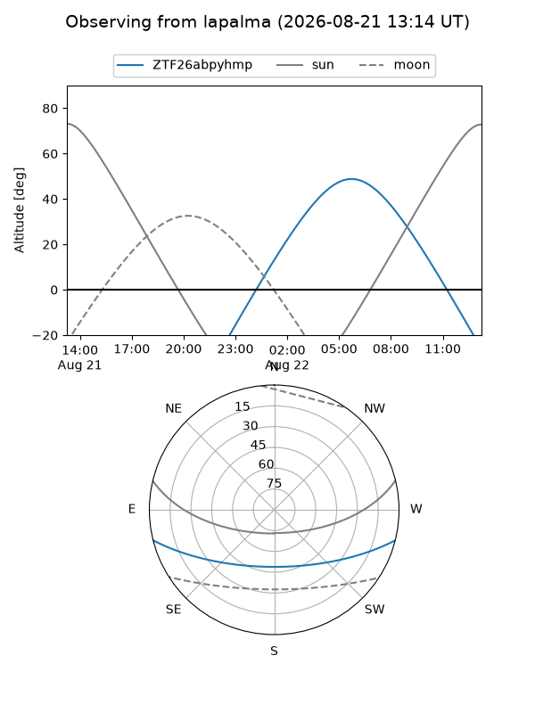

ZTF26abpyhmp
Target ZTF26abpyhmp at 2026-08-22 12:32
Aliases and brokers:
FINK-ZTF: ztf.fink-portal.org/ZTF26abpyhmp
Lasair-ZTF: lasair-ztf.lsst.ac.uk/objects/ZTF26abpyhmp
ALeRCE-ZTF: alerce.online/object/ZTF26abpyhmp
Direct TNS query: direct search
alt names
ZTF26abpyhmp (ztf,fink_ztf)
Coordinates:
equatorial (ra, dec) = 38.1580,-12.53196
equatorial (HMS+DMS) = 02:32:37.93,-12:31:55.06
galactic (l, b) = (186.2857,-62.17817)
Flags:
peak dt: -4.7
Photometry:
last ztfg=19.78, ztfr=19.86
2 ztfg, 1 ztfr detections
Lightcurve

Visibility


Additional plots